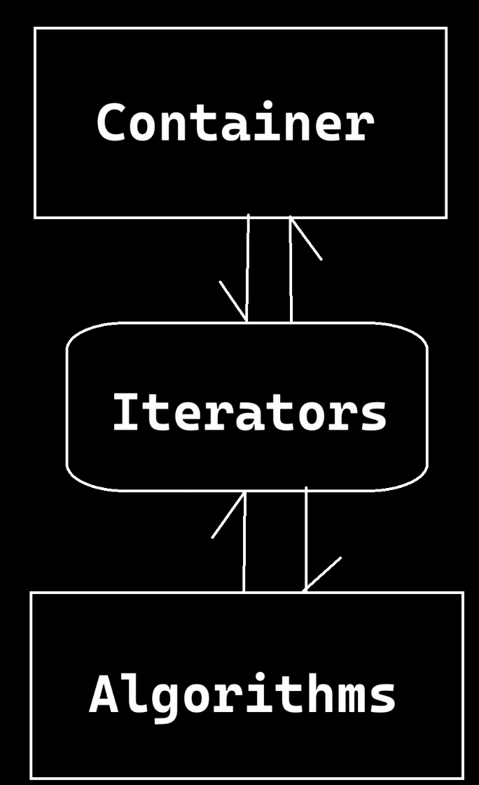
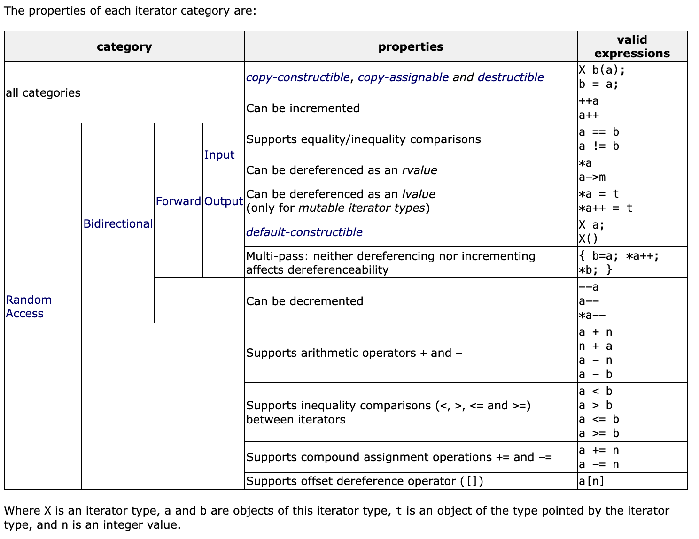
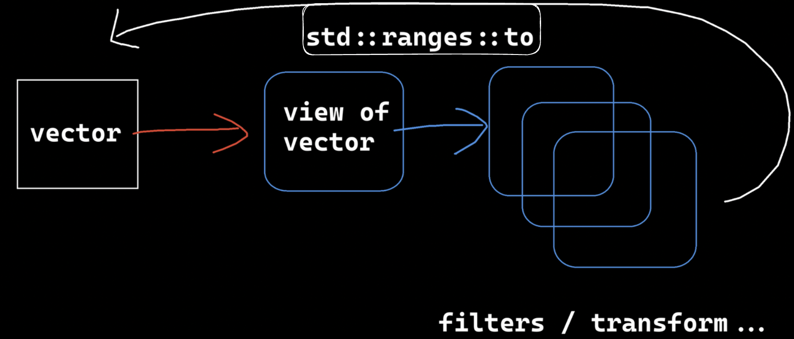

由三部分组成。
容器Container：装数据的
迭代器Iterator：不同容器的结构、算法行为不一样，用迭代器来屏蔽差异。Iterator有好多种，但是有通用的接口，在容器和算法中间，通过迭代器与另一者相互通信。
算法Algorithm：插入、修改、删除等
有的说法是六大组件组成：容器、迭代器、算法、仿函数、适配器、分配器

1 2 template <class T , class Alloc = allocator<T> >class vector;
第一个模板参数是容器中元素的类型。
遍历示例：
1 2 3 4 5 6 7 8 9 10 11 12 13 14 15 16 17 18 19 20 int main () std::vector<int > vec{ 1 , 2 , 3 , 4 , 5 , 6 , 7 , 8 }; std::vector<int >::iterator it = vec.begin (); for (; it != vec.end (); ++it) { std::cout << *it << std::endl; } for (auto v : vec) { std::cout << v << std::endl; } for (auto && v : vec) { std::cout << v << std::endl; } }
size是当前容器内有效元素数
capacity是当前容器的容量
capacity大于等于size
当满容时，vector会扩容到原来的1.5倍。之前的数据拷贝到新区后销毁。
push_back和emplace_back
push_back的语义是把构造好的对象，或用封装的数据临时构造一个对象，再插入到容器的尾部。发生了拷贝构造、右值引用拷贝构造。emplace_back是把数据一个一个直接填充到容器尾部的空间上。
用到了完美转发
1 2 3 4 5 6 7 8 9 10 11 12 13 14 15 16 17 18 class Test { public : Test (int a, int b) { std::cout << "Test(a, b)" << std::endl; } }; int main () std::vector<Test> vec{ {10 , 20 }, {30 , 40 }, {50 , 60 }, {70 , 80 } }; vec.push_back ({ 90 , 100 }); Test test{ 110 , 120 }; vec.push_back (test); vec.emplace_back (130 , 140 ); std::cout << vec.size () << std::endl; std::cout << vec.capacity () << std::endl; }
所有都：
支持析构、拷贝构造、拷贝赋值。
Can be incremented ++a or a++
Input/Output：迭代器的输入、输出是相对于算法来说的。
Input：程序通过迭代器向算法传参，可以理解为只读
支持相等比较
支持解引用为右值
Output：算法通过迭代器向外输出
支持解引用为左值
Forward
支持默认的构造
Bidirectional
Can be decremented --a or a--
Random Access
支持随意加减 a + n, n + a, a - n, a - b
支持和另一迭代器之间的不等比较 a < b, a > b
支持复合赋值运算 a += n, a -= n
支持偏移量（offset）解引用 a[n]

在没有concept之前，编程时乱用不匹配的迭代器编译时是不知道对错的，运行的时候才报错。C++之后随着模板和concept的发展，可以约束迭代器的行为。比如规定此迭代器类必须支持++、--操作，从而此迭代器是Bidirectional。
具体见《Cpp_concept》
1 2 template <class Container >back_insert_iterator<Container> back_inserter (Container& x) ;
构建后插入迭代器push_back成员函数（例如vector、Deque和List）。
体现了适配器模式。
与之相类似的，还有front_inserter，头插迭代器。
示例见ranges中copy_if的用法
erase后，此it失效。++操作也会失效
erase返回下一个有效的it，所以，删除后用此返回值赋给it。
其他情况正常++
如果只需要删1个，就在erase后break，否则后面条件匹配的全部会删除
1 2 3 4 5 6 7 8 9 10 11 12 13 14 15 16 17 18 19 20 21 22 23 24 #include <iostream> #include <vector> int main () std::vector<int > vec{ 10 , 20 , 30 , 40 , 50 , 60 , 70 , 80 }; for (auto it = vec.begin (); it != vec.end (); ) { if (*it == 40 ) { it = vec.erase (it); } else { ++it; } } for (auto && v : vec) { std::cout << v << std::endl; } }
<algorithm>
1 constexpr _InIt find<_InIt, _Ty>(_InIt _First, const _InIt _Last, const _Ty &_Val);
InIt表示Input Iterator，指被输入，是用于接收的迭代器，或者理解为只读不修改。
First表示搜索范围的上限，Last表示搜索范围的下限。
区间是左闭右开。[First, Last)
Val是要查找的值
返回指向Val值其位置的迭代器。如果没找到，则返回xxx.end()
1 2 3 4 5 6 7 8 #include <algorithm> int main () std::vector<int > vec{ 1 , 2 , 3 , 4 , 5 , 6 , 7 , 8 }; auto it = std::find (vec.begin (), vec.end (), 6 ); if (it != vec.end ()) std::cout << *it << std::endl; }
find是默认寻找相等的val。而find_if可以自定义条件。
1 2 template <class InputIterator , class UnaryPredicate >InputIterator find_if (InputIterator first, InputIterator last, UnaryPredicate pred) ;
模板参数1是只读迭代器。
遍历输出容器中所有的奇数：
定义谓词为返回bool的函数
先找一次，返回it
若不为end，打印后，继续循环找、打印
直到it返回end。
1 2 3 4 5 6 7 8 9 10 11 12 13 14 15 16 bool is_odd (int const & v) return v % 2 != 0 ; } int main () std::vector<int > vec{ 0 , 1 , 2 , 3 , 4 , 5 , 6 , 7 , 8 }; auto it = std::find_if (vec.begin (), vec.end (), is_odd); while (it != vec.end ()) { std::cout << *it << std::endl; it = std::find_if (it + 1 , vec.end (), is_odd); } return 0 ; }
也可以拿仿函数作为谓词。
1 2 3 4 5 6 7 8 class IsOdd { public : bool operator () (int const & v) { return v % 2 != 0 ; } };
使用如下：需要先实例化出一个对象。
1 2 3 4 5 6 7 8 9 int main () std::vector<int > vec{ 0 , 1 , 2 , 3 , 4 , 5 , 6 , 7 , 8 }; IsOdd is_odd_functor; auto it = std::find_if (vec.begin (), vec.end (), is_odd_functor); }
也可以使用lambda表达式
1 2 3 4 5 6 7 8 9 10 11 12 13 int main () std::vector<int > vec{ 0 , 1 , 2 , 3 , 4 , 5 , 6 , 7 , 8 }; auto it = std::find_if ( vec.begin (), vec.end (), [](int const & v) -> bool { return v % 2 != 0 ; }); }
first和last是迭代器，需要先解引用才能使用pred去判断值。
first到last左闭右开，first等于last时结束。
内部封装了pred的实际调用形式pred(...)。所以不管是函数、仿函数，只要支持(...)的调用形式就能使用。
1 2 3 4 5 6 7 8 9 10 11 12 13 14 15 16 17 18 19 20 21 22 23 24 25 26 template <class InputIterator , class UnaryPredicate >InputIterator find_if (InputIterator first, InputIterator last, UnaryPredicate pred) while (first != last) { if (pred (*first)) return first; else ++first; } return last; } int main () std::vector<int > vec{ 0 , 1 , 2 , 3 , 4 , 5 , 6 , 7 , 8 }; IsOdd is_odd_functor; auto it = ::find_if (vec.begin (), vec.end (), is_odd_functor); while (it != vec.end ()) { std::cout << *it << std::endl; it = ::find_if (it + 1 , vec.end (), is_odd_functor); } }
remove_if
1 2 template <class ForwardIterator , class UnaryPredicate >ForwardIterator remove_if (ForwardIterator first, ForwardIterator last, UnaryPredicate pred) ;
需要Iterator可以Forward单向移动。
1 2 3 4 5 6 7 8 9 10 11 12 13 14 template <class ForwardIterator , class UnaryPredicate >ForwardIterator remove_if (ForwardIterator first, ForwardIterator last, UnaryPredicate pred) ForwardIterator result = first; while (first != last) { if (!pred (*first)) { if (result != first) *result = std::move (*first); ++result; } ++first; } return result; }
从实现可以看出：
遍历时遇到要删的，first先往后面继续遍历，result不动；
遇到不匹配条件的（不删的），first的值就往前面与result的值交换，result后移。
最后，result的位置以及之后就是要删的所有数据。
这样是为了防止批量删除时，数据频繁的前移。如此，可以只进行交换，后面一并删除。remove_if不会帮我们删除数据，而是帮我们整理好容器内数据的排布后，再返回一个it迭代器，指示要删除的开始位置。
1 2 3 4 5 6 调用前： { 0, 1, 2, 3, 4, 5, 6, 7, 8 } 调用后： { 0, 2, 4, 6, 8, 1, 3, 5, 7 } ^ it -> 要删除的数据的开始位置
1 2 3 4 5 6 7 8 9 10 11 12 13 14 int main () std::vector<int > vec{ 0 , 1 , 2 , 3 , 4 , 5 , 6 , 7 , 8 }; auto it = std::remove_if ( vec.begin (), vec.end (), [](int const & v) -> bool {return v % 2 != 0 ;}); while (it != vec.end ()) { it = vec.erase (it); } }
指定范围，每一个元素做某事。
以下表示：从begin到end，每个元素输出自己的值+10的结果。
1 2 3 4 5 6 7 8 9 10 11 12 int main () std::vector<int > vec{ 0 , 1 , 2 , 3 , 4 , 5 , 6 , 7 , 8 }; std::for_each( vec.begin (), vec.end (), [](auto const & v) { std::cout << v + 10 << std::endl; }); }
可以在for_each中第一个参数加上std::execution::par表示并行处理。
1 2 3 4 5 6 7 8 9 10 11 12 13 int main () std::vector<int > vec{ 0 , 1 , 2 , 3 , 4 , 5 , 6 , 7 , 8 }; std::for_each( std::execution::par, vec.begin (), vec.end (), [](auto const & v) { std::cout << v + 10 << std::endl; }); }
但是输出可能会乱七八糟的：
除了std::execution::par还有std::execution::seq，表示顺序执行。
返回有重复值的开始位置。
equality
template <class ForwardIterator>ForwardIterator adjacent_find (ForwardIterator first, ForwardIterator last);
predicate
template <class ForwardIterator, class BinaryPredicate>ForwardIterator adjacent_find (ForwardIterator first, ForwardIterator last, BinaryPredicate pred);
实现：
1 2 3 4 5 6 7 8 9 10 11 12 13 14 template <class ForwardIterator >ForwardIterator adjacent_find (ForwardIterator first, ForwardIterator last) if (first != last) { ForwardIterator next=first; ++next; while (next != last) { if (*first == *next) return first; ++first; ++next; } } return last; }
要求迭代器是const的。
1 2 3 4 5 6 7 8 9 10 11 12 13 14 15 16 17 18 int main () std::vector<int > vec{ 0 , 1 , 2 , 2 , 4 , 5 , 6 , 7 , 8 }; auto it = std::adjacent_find (vec.cbegin (), vec.cend ()); while (it != vec.end ()) std::cout << *it++ << std::endl; }
返回重复值开始位置只是adjacent_find的默认行为，实际上是容器内两个相邻元素的一种==对比，我们可以自定义对比相邻元素的行为。
1 2 3 4 5 6 7 8 9 10 11 12 13 14 15 16 17 18 19 20 21 22 23 int main () std::vector<int > vec{ 0 , 1 , 2 , 3 , 4 , 5 , 6 , 7 , 8 }; auto it = std::adjacent_find ( vec.cbegin (), vec.cend (), [](auto const & v, auto const & v2) -> bool ) { return v == 3 ; }; while (it != vec.end ()) std::cout << *it++ << std::endl; }
1 2 template <class InputIterator , class T >typename iterator_traits<InputIterator>::difference_type count (InputIterator first, InputIterator last, const T& val) ;
合计从first到last的val值有多少。
可以在第一个参数中设定std::execution::par以分解任务的并行方式执行。
1 2 3 4 5 6 int main () std::vector<int > vec{ 0 , 1 , 2 , 3 , 4 , 5 , 6 , 7 , 8 , 3 }; auto n = std::count (std::execution::par, vec.cbegin (), vec.cend (), 3 ); }
如下，统计奇数。
1 2 3 4 5 6 7 8 9 10 11 12 13 14 int main () std::vector<int > vec{ 0 , 1 , 2 , 3 , 4 , 5 , 6 , 7 , 8 , 3 }; auto n = std::count_if ( std::execution::par, vec.cbegin (), vec.cend (), [](auto const & v) -> bool { return v % 2 != 0 ; }); }
1 2 template <class InputIterator , class OutputIterator >OutputIterator copy (InputIterator first, InputIterator last, OutputIterator result) ;
first到last是要被拷贝的数据位置
result是要写入的位置
result不能指向first到last中的任意一个。
返回写入的最后一个数据的下一个位置。
1 2 3 4 5 6 7 8 9 10 template <class InputIterator, class OutputIterator>OutputIterator copy (InputIterator first, InputIterator last, OutputIterator result) while (first != last) { *result = *first; ++result; ++first; } return result; }
shuffle意为随机洗牌的意思。
1 2 template <class RandomAccessIterator , class URNG >void shuffle (RandomAccessIterator first, RandomAccessIterator last, URNG&& g)
参数1、2为可随机访问的迭代器
参数3是URNG，指基于的引擎，常常使用<random>中的。
如果需要每次运行时的结果不一样，需要传入种子。
permutation表示一组数据可能的一种序列、排列。此函数用于检查两个序列是否是彼此的排列（即，两个序列中的元素相同，顺序可能不同）
permutation and combination n. 排列组合
equality
template <class ForwardIterator1, class ForwardIterator2>bool is_permutation (ForwardIterator1 first1, ForwardIterator1 last1, ForwardIterator2 first2);
predicate
template <class ForwardIterator1, class ForwardIterator2, class BinaryPredicate>bool is_permutation (ForwardIterator1 first1, ForwardIterator1 last1, ForwardIterator2 first2, BinaryPredicate pred);
对比first1到last2是不是first2开始的相同数目的元素的一种排列。
可以加二元谓词，如果不加则默认是用==作谓词。
需要注意：
L1元素数目应当小于等于L2的元素数目，
如果L1元素数目大于L2，则程序崩溃。
L1长度如果小于L2，只和L2的前L1长度个元素进行对比。
所以如果要得到正确的结果，应该前提知道L1长度等于L2长度。
以下为实现：
1 2 3 4 5 6 7 8 9 10 11 12 13 14 15 16 17 18 19 20 21 22 23 24 25 26 27 28 29 30 31 32 template <class InputIterator1 , class InputIterator2 >bool is_permutation (InputIterator1 first1, InputIterator1 last1, InputIterator2 first2) std::tie (first1, first2) = std::mismatch (first1, last1, first2); if (first1 == last1) return true ; InputIterator2 last2 = first2; std::advance (last2,std::distance (first1, last1)); for (InputIterator1 it1 = first1; it1 != last1; ++it1) { if (std::find (first1, it1, *it1) == it1) { auto n = std::count (first2, last2, *it1); if (n == 0 || std::count (it1, last1, *it1) != n) return false ; } } return true ; }
把vec复制到vec2，vec随机化，然后再判断
1 2 3 4 5 6 7 8 9 10 11 12 13 14 15 16 17 18 19 20 21 22 23 24 25 26 27 int main () std::vector<int > vec{ 0 , 1 , 2 , 3 , 4 , 5 , 6 , 7 , 8 }; std::vector<int > vec2 (vec.size()) ; std::copy (vec.cbegin (), vec.cend (), vec2. begin ()); std::shuffle (vec.begin (), vec.end (), std::default_random_engine ()); bool res = std::is_permutation (vec.cbegin (), vec.cend (), vec2. cbegin ()); if (res) std::cout << "vec经过打乱后，依然是vec2的重新排列" << std::endl; else std::cout << "vec不是vec2的重新排列" << std::endl; for (auto const & v : vec) std::cout << v << std::endl; }
transform range. 经过一个计算操作，变换为另一种单位。
以下操作表示：把vec中的数据每个都平方、转为long long后存到vec2。
1 2 3 4 5 6 7 8 9 10 11 12 13 14 int main () std::vector<int > vec{ 0 , 1 , 2 , 3 , 4 , 5 , 6 , 7 , 8 }; std::vector<long long > vec2 (vec.size()) ; std::transform ( std::execution::par, vec.cbegin (), vec.cend (), vec2. begin (), [](auto const & v) -> long long { return v * v; }); }
这里发现一个问题：当(auto const& v)中&改为&&时就运行时报错。const后，(auto && v)中&&就又没问题了。&&，就不能和const共存。(auto && v)是可以推断出v是const int &的，因此不要再自己加const了。
1 2 3 4 5 6 7 8 9 10 11 12 13 14 15 16 int main () std::vector<int > vec{ 0 , 1 , 2 , 3 , 4 , 5 , 6 , 7 , 8 }; std::vector<int > vec2{ 10 , 11 , 12 , 13 , 14 , 15 , 16 , 17 , 18 }; std::vector<long long > vec3 (vec.size()) ; std::transform ( std::execution::par, vec.cbegin (), vec.cend (), vec2. cbegin (), vec3. begin (), [](auto && v, auto && v2) -> long long { return v + v2; }); }
<funcational>结合
该库中提供了一些运算类。如minus、plus、multiplies
1 2 3 4 5 6 7 8 9 10 11 template <class T >struct plus { T operator () (const T& x, const T& y) const { return x + y; } typedef T first_argument_type; typedef T second_argument_type; typedef T result_type; };
使用：直接放在functor的位置，不用声明参数，直接就给你提取了。甚至可以不填模板参数！太强悍了。
1 2 3 4 5 6 7 8 9 10 11 12 13 14 15 #include <functional> int main () std::vector<int > vec{ 0 , 1 , 2 , 3 , 4 , 5 , 6 , 7 , 8 }; std::vector<int > vec2{ 10 , 11 , 12 , 13 , 14 , 15 , 16 , 17 , 18 }; std::vector<long long > vec3 (vec.size()) ; std::transform ( std::execution::par, vec.cbegin (), vec.cend (), vec2. cbegin (), vec3. begin (), std::plus <int >()); }
来自<numeric>C++17之后演化成了reduce。
sum
template <class InputIterator, class T>T accumulate (InputIterator first, InputIterator last, T init);
custom
template <class InputIterator, class T, class BinaryOperation>T accumulate (InputIterator first, InputIterator last, T init, BinaryOperation binary_op);
其中init可以指定一个起始值、基准值。
实现
1 2 3 4 5 6 7 8 9 template <class InputIterator , class T >T accumulate (InputIterator first, InputIterator last, T init) while (first!=last) { init = init + *first; ++first; } return init; }
使用
1 2 3 4 5 6 7 8 9 10 #include <numeric> int main () std::vector<int > vec{ 1 , 2 , 3 , 4 , 5 , 6 , 7 , 8 }; auto sum = std::reduce (std::execution::par, vec.cbegin (), vec.cend ()); auto sum = std::reduce (std::execution::par, vec.cbegin (), vec.cend (), 100 ); }
使用lambda表达式，指定reduce的计算规则。比如可以让它从累加变为累乘。vec[0]，必须提供一个v1搭配，就由init充当）
1 2 3 4 5 6 7 8 9 10 11 12 13 14 15 #include <numeric> int main () std::vector<int > vec{ 1 , 2 , 3 , 4 , 5 , 6 , 7 , 8 }; auto sum = std::reduce ( std::execution::par, vec.cbegin (), vec.cend (), 100 , [](auto && v, auto && v2) -> int { return v + v2 + 15 ; }); }
同理，也可以用<functional>中的functor作为谓词。
1 2 3 4 5 6 7 8 9 10 11 12 int main () std::vector<int > vec{ 1 , 2 , 3 , 4 , 5 , 6 , 7 , 8 }; auto sum = std::reduce ( std::execution::par, vec.cbegin (), vec.cend (), 0 , std::plus ()); }
C++20
把奇数挑出来。并且把每个数做一次变换。
1 2 3 4 5 6 7 8 9 10 11 12 13 14 15 16 17 18 19 20 21 22 class IsOdd { public : bool operator () (int const & v) { return v % 2 != 0 ; } }; int main () std::vector<int > vec{ 1 , 2 , 3 , 4 , 5 , 6 , 7 , 8 }; std::vector<int > vec2 (vec.size()) ; auto it = std::copy_if ( vec.cbegin (), vec.cend (), vec2. begin (), [](auto && v) -> bool { return v % 2 != 0 ; }); }
std::back_inserter(vec2)只用执行一次，与vec2产生关联，生成一个输出迭代器。在算法发生输出时，就在尾部自动扩容并插入数据。
但back_inserter不适合与vector搭配，因为尾插会造成容量频繁改变。更适合与list搭配。
1 2 3 4 5 6 7 8 9 10 11 12 13 14 15 16 17 18 19 20 21 22 23 24 25 26 #include <iterator> int main () std::vector<int > vec{ 1 , 2 , 3 , 4 , 5 , 6 , 7 , 8 }; std::vector<int > vec2; auto it = std::copy_if ( vec.cbegin (), vec.cend (), std::back_inserter (vec2), [](auto && v) -> bool { return v % 2 != 0 ; }); std::transform ( std::execution::par, vec2. cbegin (), vec2. cend (), vec2. begin (), [](auto && v) -> auto { return v * v; }); }
先生成源数据（可以用generator或fill来填充）
选择性拷贝，即filter
用高阶函数（lambda函数对象）限定filter行为
用back_inserter做输出
transform。
这种数据流式（data flow）、流水线式的操作，是一种常见于大型软件的设计模式。这种就很适合用C++20中的ranges库来处理、简化。
一般的filter如copy_if的参数需要两个输入迭代器、一个输出迭代器和一个谓词，现在ranges搭配管道符号，参数只需要填写谓词即可。
1 2 3 4 5 6 7 8 9 10 11 12 13 14 15 16 17 18 19 20 21 22 void example () std::vector<int > vec{ 1 , 2 , 3 , 4 , 5 , 6 , 7 , 8 }; auto trans_view = vec | std::ranges::views::filter ( [](auto && v) -> bool { return v % 2 != 0 ; }) | std::ranges::views::transform ( [](auto && v) -> auto { return v * v; }); for (auto && v : trans_view) { std::cout << v << std::endl; } } int main () example (); }
调试时，发现首先略过了view，而是到了for循环取结果时才回去求值。这种求值方式称之为：惰性求值。ranges::dangling作占位符。
更简洁的写法：（ranges可以省略，直接写std::views）
1 2 3 4 5 6 7 8 9 10 11 12 13 14 15 16 void example () auto is_odd = [](auto & v) -> bool { return v % 2 != 0 ; }; auto square = [](auto && v) -> auto { return v * v; }; for (auto && v : vec | std::views::filter (is_odd) | std::views::transform (square)) { std::cout << v << std::endl; } }

view是依赖vector的，内容来自vector，实际上view对容器的每个元素进行了一些连接
view经过各种变换，如filter、transform，也将变为一个view
view可以通过管道+std::ranges::to变为一个容器。
惰性计算：
view中没有任何实体元素，只是逻辑上的映射。
如果此时view要让元素6加2，则view是把元素6+2的这个操作内容、抽象逻辑传给下一步。在实际操作之前，一系列的操作内容可以积累到一起，到最后再一次性计算。实际的操作只有最后vector被读取、调用的时候才去从vector取元素。
中间的view只是把操作连接上，相当于函数套内部函数，逻辑行为套内部行为。就类似于lambda函数。这种都叫做惰性计算，是面向函数编程范式的特点，更关注于高阶的抽象、干什么逻辑，不关注具体操作。